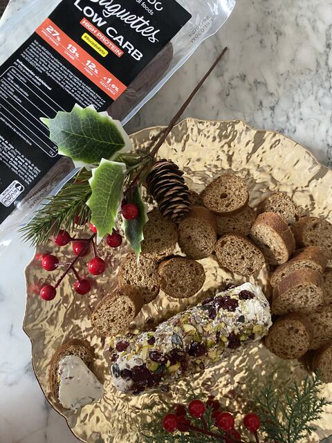

Receta · Almuerzo · 25 min aprox.
Queso Navideño Relleno de Pistachos y Arándanos
Prepara queso Navideño Relleno de Pistachos y Arándanos con Baguettes Low Carb: una receta fácil que tendrás lista en unos 25 minutos. Lleva baguette Low Carb, queso untable firme y cremoso y pistachos, y es perfecta para un almuerzo, una cena ligera o para llevar. Baguettes Low Carb aporta 27 g de proteína por cada 100 g.
5 ingredientes7 pasos25 min aprox.
 Hecha conBaguettes Low Carb220 g · 2 uds de 110 gVer producto
Hecha conBaguettes Low Carb220 g · 2 uds de 110 gVer productoIngredientes
- Baguette Low Carb
- Queso untable firme y cremoso
- Pistachos
- Pasas de arándanos
- Semillas varias
Información nutricionalQueso untable navideño para compartir
Preparación
- 01Cortar la baguette en rodajas (tostar opcional, 5 minutos al horno)
- 02Picar los pistachos y arándanos, reservando 2/3
- 03Mezclar el resto con semillas varias
- 04Mezclar con el queso untable
- 05Formar un rollo sobre papel film, compactando bien
- 06Cubrir el rollo con los pistachos, arándanos y semillas reservados
- 07Refrigerar antes de servir